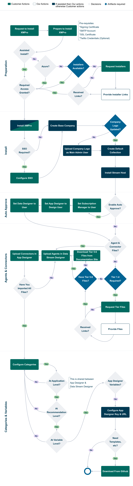

Overview
XMPro Platform consists of three main components:
- App Designer
- Data Stream Designer
- Subscription Manager
XMPro supports a wide range of deployment options e.g. Cloud, Docker, On-Premise, etc. The complete process - encompassing preparation, installation, setup, and loading templates - is depicted in the flowchart below.

Artifacts
- Request Installers
- Request Tiers 1 - 4
- Download and install Tier 5 & 6 Files
- Links for the larger AI & ML Agents* are on their individual documentation pages, as indicated here.
- Download GitHub Templates
Last modified: May 30, 2025